Reaper 7 - My Setup/Configuration
Note
- Table of Contents
Installation
- Download latest version of Reaper
- Install as Portable Install
- Mac:
- Put REAPER.app inside a folder
- Create a blank plain text file named “reaper.ini” in the same folder. (Make sure that the file extension is “.ini” not “.txt”)
- Launch Reaper
- Windows
- Simply check the option for portable installation when running the Reaper installer.
- Mac:
Updates
If you installed Reaper using the Portable Installation method described above, on all future updates you can simply replace the Reaper.app file inside the folder that has the application and other Reaper’s other files/folders.
Before I install any major Reaper updates, I like to first Zip my Reaper folder and name it something like Reaper Backup 2023-10-17 and stick it in a folder with my other Reaper archives. This way if there are any issues with the new version of Reaper I can easily go back to an older version.
SWS Extension
- Quit Reaper
- Download the SWS Reaper Extension
- Install SWS files. Remember that you did a portable install so all the SWS files that you install should go somewhere within the Folder that has your Reaper app.
- After you install everything find the
reaper_sws-x86_64.dylibfile inside your User Plugins folder and open it using Terminal. If you don’t do this, you operating system will mark this file as a security risk and Reaper wont be able to run it. - Relaunch Reaper
Note
ReaPack Manager
- Quit Reaper
- Download the ReaPack Package Manger
- Follow the installation instruction but be sure to install things inside your Reaper folder (like the SWS Extension).
- After you install everything find the
ReaPack x86_64.dylibfile inside your User Plugins folder and open it using Terminal. If you don’t do this, you operating system will mark this file as a security risk and Reaper wont be able to run it. - Relaunch Reaper
Shortcuts Assignments
Mouse Zooming & Scrolling
Note
-
Adjust Reaper Zoom/Scroll/Offset Preferences
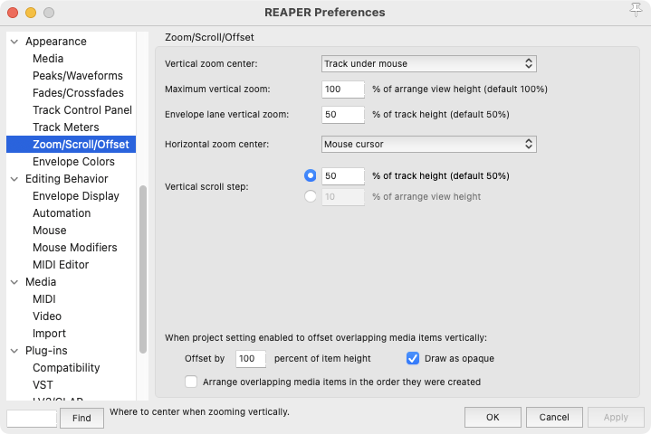
-
Adjust Mouse Navigation Actions
HorizWheel= View: Scroll horizontally reversed (MIDI CC relative/mousewheel)Mousewheel= View: Scroll vertically (MIDI CC relative/mousewheel)Option+Mousewheel= View: Zoom vertically (MIDI CC relative/mousewheel)Option+HorizWheel= View: Zoom horizontally (MIDI CC relative/mousewheel)Option+Shift+Mousewheel= View: Adjust selected track heights (MIDI CC relative/mousewheel)
Other Shortcuts
T= SWS/BR: Move closest grid line to mouse cursor (perform until shortcut released)Command+Shift+T= Insert virtual instrument on new track…Shift+Return= Transport: Go to start of projectC= Options: Toggle metronomeR= Transport: RecordOption+C= Track: Set to custom color…F= SWS/S&M: Toggle show FX chain windows for selected tracksP= View: Toggle show MIDI editor windowsX= View: Toggle mixer visibleOption+M= Markers: Insert and/or edit marker at current positionOption+R= Markers: Insert region from time selection and edit…M= Item properties: Toggle items/tracks mute (depending on focus)S= Track: Toggle solo for selected tracksI= Item properties: Show media item/take propertiesOption+C= SWS: Set selected track(s)/item(s) to custom color…
Project AutoSaves & Backups
-
Adjust saving keyboard shortcuts
Command+Shift+S= File: Save project as…
-
Setup Backups and AutoSaves to happen every minute or whenever the project is saved manually and to save them to folder within the project directory named “Backups”
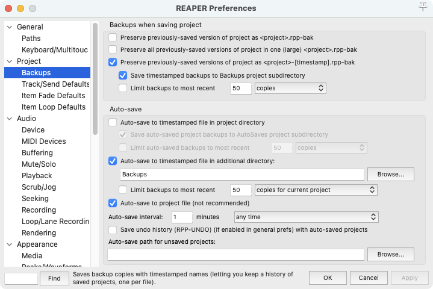
Mixer Setup
-
Move Master Track to right side of mixer
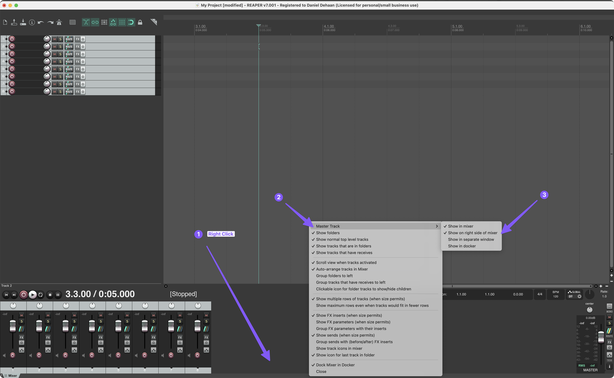
Note
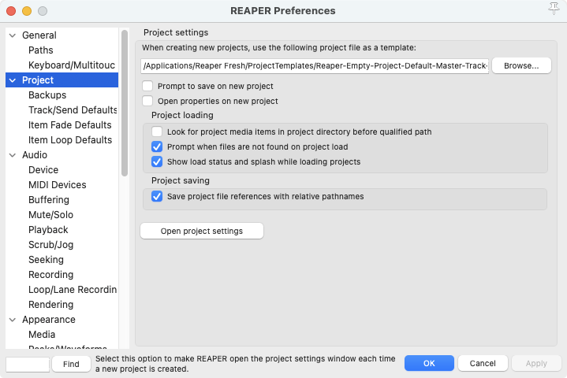
-
Set Horizontal Mousehweel over mixer to scrolls tracks rather than arrange view in Reaper preferences.
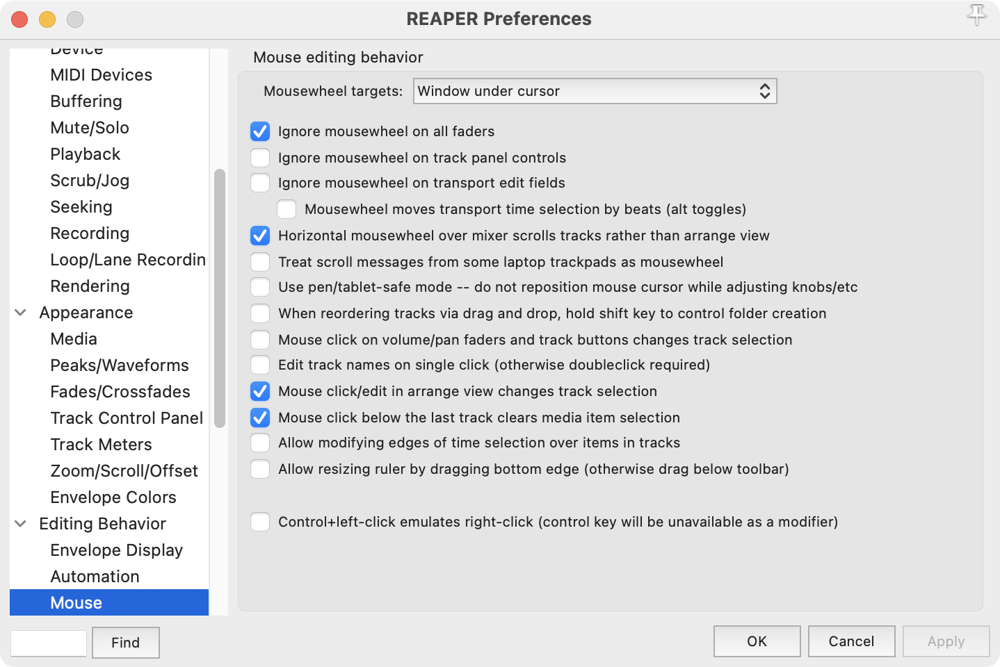
Quick Adder 2
- Install Quick Adder 2 via ReaPack
- https://forum.cockos.com/showthread.php?t=232928
- For full Quick Adder 2 functionality, also install “js_reascriptapi” via ReaPack.
- Assign Keyboard Shortcut to lunch Quick Adder 2
== Script: neutronic_Quick Adder 2.lua
Custom Insert New Instrument Track and Audio Track Scripts
With the help of ChatGPT I created two custom action that inserts a new tracks and configures their input, monitoring, and record arm settings to my desired defaults for either an audio track or a MIDI track. These scripts will first check to see if any folder tracks are selected and, if so, add one new track at the bottom of each selected folder. If not folder tacks are selected, it will just add a new track at the bottom of the track list.
Here are the scripts:
DRD_Insert Empty Audio Track.lua
DRD_Insert Empty Instrument Track.lua
To use these script:
-
Add each script to the Scripts folder inside your Reaper folder.
-
In Reaper, Open the Actions window.
-
Click “New action…”
-
Select “Load ReaScript…”
-
Open the “DRD_Insert Empty Instrument Track.lua” file.
-
Repeat steps 3 and 4 and open the “DRD_Insert Empty Audio Track.lua” file.
-
Assign a key command. I like
Command+Shift+Tfor Inserting and Empty Instrument Track, andCommand+Tfor inserting and empty Audio track.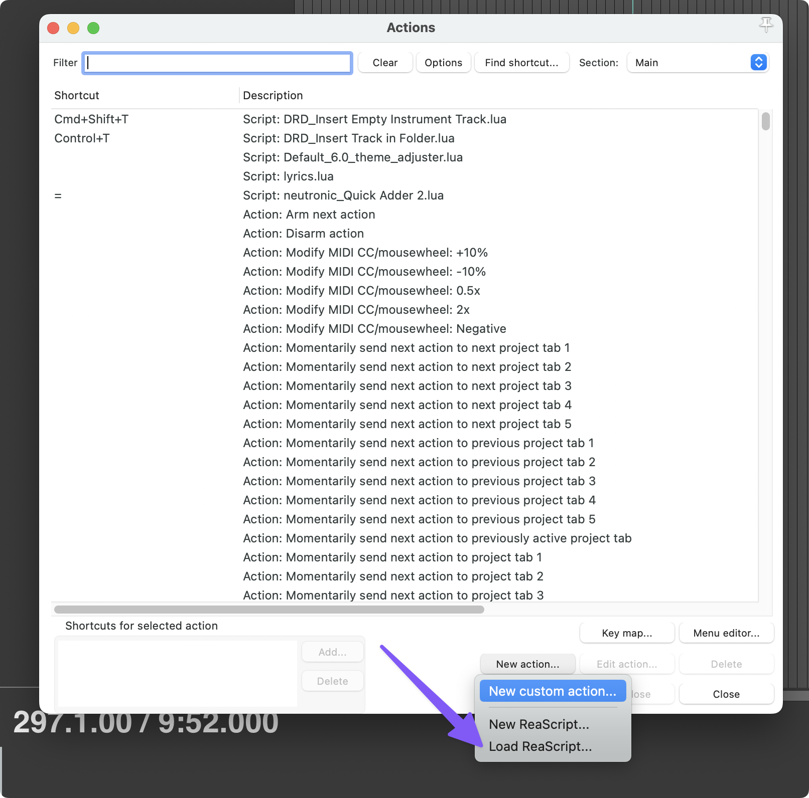
-
I then also replaced the default “Insert virtual instrument on new track…” and “Insert new track” in both the “Empty TCP Context” and “Track control panel context” menus with these custom scripts.
-
You can find and customize this menu by navigating to Options > Customize menu/toolbars…
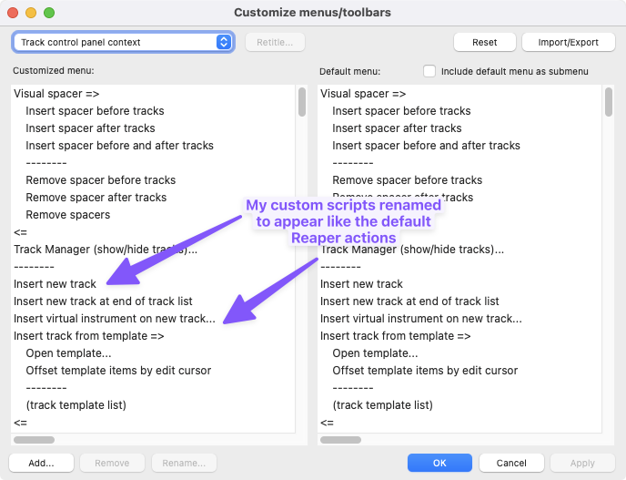
-
Plug-In Preferences
Updated a couple of plug-in preferences, mainly so that if I have an FX window open, it will automatically show me the FX of whatever track I have selected and follow me if I change the selected track.
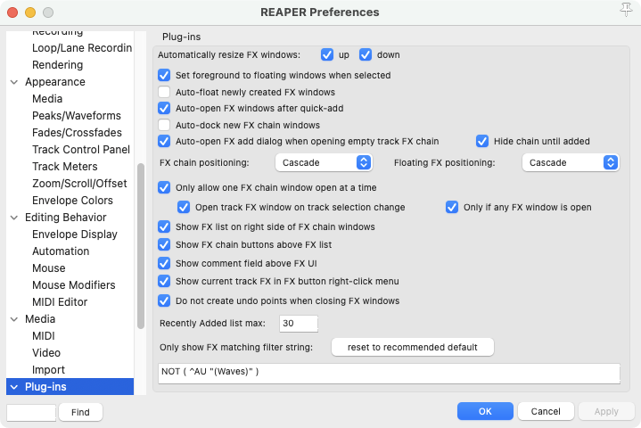
Grid Line Settings
-
Adjust grid lines to be clearer and to show over the top of items
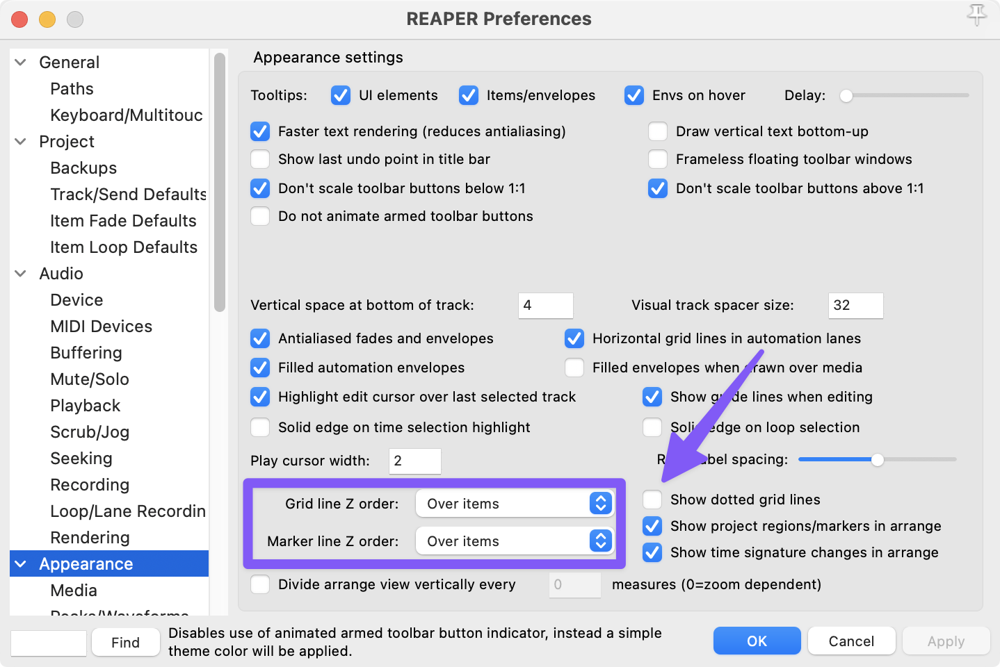
MIDI Editor
Preferences
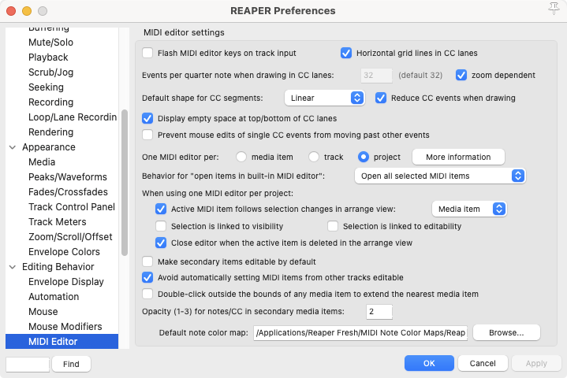
Zooming and Navigation - MIDI Editor Actions:
HorizWheel= View: Scroll horizontally reversed (MIDI relative/mousewheel)Mousewheel= View: Scroll vertically (MIDI relative/mousewheel)Option+HorizWheel= View: Zoom horizontally reversed (MIDI relative/mousewheel)Option+Mousewheel= View: Zoom vertically (MIDI relative/mousewheel)Shift+Return= View: Go to start of file
Other Keyboard Shortcuts
Up Arrow= Edit: Move notes up one semitoneShift+UpArrow= Edit: Move notes up one octaveDownArrow= Edit: Move notes down one semitoneShift+DownArrow= Edit: Move notes down one octave
Piano Roll Settings
-
Adjust how notes are shown in the piano roll
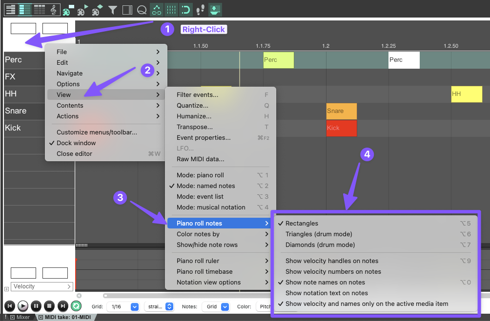
-
Switch to a custom Color Map for note coloring. I like the “Deluxe more contrast” by ReaperTips! You can download the ReaperTips color maps and find installation instructions on the ReaperTips website.
MIDI Editor Mouse Modifiers
The mouse modifiers for the MIDI editor and MIDI notes where not working the way my brain wanted them to, so I went through and pretty much turned off all the defaults (while making a mental note of what was possible) and just turned on a few basics that I need to get started.
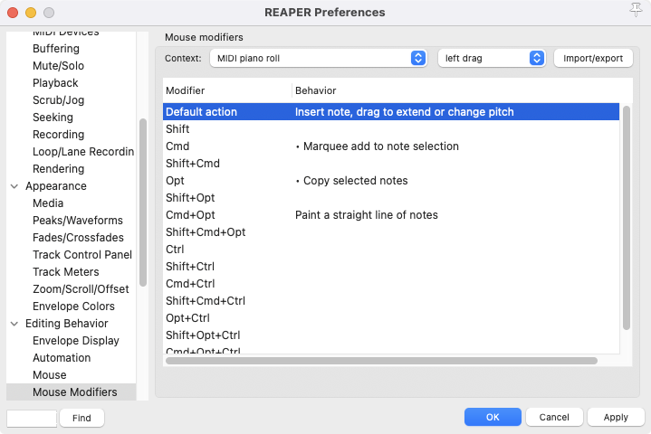
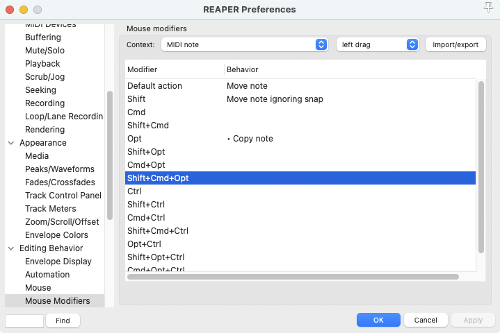
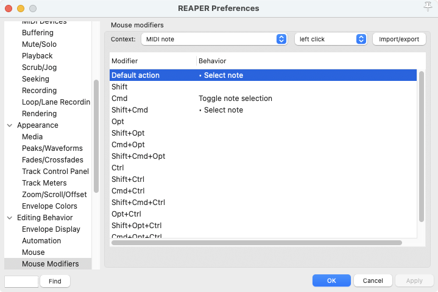
MIDI Editor Custom Scripts
Set MIDI Editor Grid via custom command
Here is a custom script I wrote that prompts the user to enter any fraction (e.g. “1/4”, “1/16”, “1/1”, “1/7”) that they want the MIDI editor’s grid to be set to.
Here is the script:
DRD_MIDI Editor - Set MIDI Editor Grid.lua
To use these script:
- Add the script to the Scripts folder inside your Reaper folder.
- In Reaper, Open the Actions window. And make sure that “MIDI Editor” is set as the “Section” in the top right corner of the Actions window.
- Click “New action…”
- Select “Load ReaScript…”
- Open the “DRD_MIDI Editor - Set MIDI Editor Grid.lua” file.
- Assign a key command. I like
Option+Shift+G
MIDI CC Lane Controller Script
This script allows me to control what CC lane is visible in the MIDI editor via a popup dialogue box that appears when the script is run.
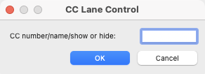
Using the script:
- Entering a value between 0 and 119 displays that CC lane in the MIDI Editor
- Entering the text “show”, “show all”, or “s” shows all the CC lanes that contain data
- Entering the text “hide”, “hide all”, or “h” hides all the CC lanes
- Some specific CC can also be shown by entering their name. The list includes:
- CC1: “mod” or “modulation”
- CC7: “vol” or “volume”
- CC11: “expression” or “x”
- CC64: “sustain”, “sustain pedal”, “hold”, or “hold pedal”
- Other MIDI Data Lanes can also be shown…
- Velocity: “v”, “vel” or “velocity”
- Pitchbend: “pitch” or “pitchbend”
- Program Change: “program” or “program change”
- Channel Pressure: “channel pressure” or “aftertouch”
- Bank/Program Select: “bank/program select”
- Text Events: “text events”
- Sysex: “sysex”
Here is the script:
DRD_MIDI Editor - Show Specific MIDI Event Lane.lua
To use these script:
- Add the script to the Scripts folder inside your Reaper folder.
- In Reaper, Open the Actions window. And make sure that “MIDI Editor” is set as the “Section” in the top right corner of the Actions window.
- Click “New action…”
- Select “Load ReaScript…”
- Open the “DRD_MIDI Editor - Show Specific MIDI Event Lane.lua” file.
- Assign a key command. I like
Shift+L
Split MIDI Notes
Split Chords to New Tracks
Here is the script:
DRD_Set MIDI Channel of Selected Events.lua
To use these script:
- Add the script to the Scripts folder inside your Reaper folder.
- In Reaper, Open the Actions window. And make sure that “MIDI Editor” is set as the “Section” in the top right corner of the Actions window.
- Click “New action…”
- Select “Load ReaScript…”
- Open the “DRD_Set MIDI Channel of Selected Events.lua” file.
- Assign a key command. I like
Control+c
Miscellaneous
Mouse Modifiers
-
Double-Clicking Media Item Edge toggles item’s looping property.
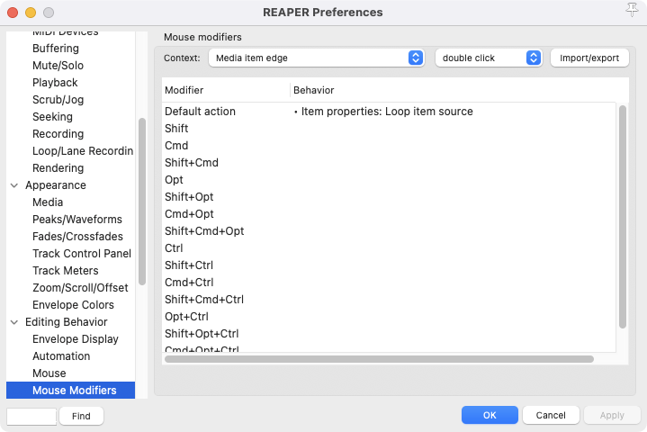
Retroactive MIDI Record
Shift-R= MIDI: Insert recent retroactively recorded MIDI for armed and selected tracks- I’ll probably come back and write my own script for this at some point. Right now it replaces any existing Items, and I’d like the option to merge or create a new take.
Begin Playback From Selected Media Item(s)
-
Had to write a custom script for this one. Here it is:
DRD_Begin Playback from Selected Item(s).lua
To use this script:
-
Add it to the Script folder inside your Reaper folder
-
In Reaper, Open the Actions window.
-
Click “New action…”
-
Select “Load ReaScript…”
-
Open the “DRD_Begin Playback from Selected Item(s).lua” file.
-
Assign a key command. I like
Control+Spacebar
-
Saving Track Templates
Custom Script for Reaper - Naming and Saving Track Templates.mov
-
Here is the custom script:
To use this script:
-
Add it to the Script folder inside your Reaper folder
-
In Reaper, Open the Actions window.
-
Click “New action…”
-
Select “Load ReaScript…”
-
Open the “DRD_Reverse elements of select track name - copy to clipboard - then prompt to save select track as track template.lua” file.
-
Assign a key command. I like
option+control+s
-
Add selected Tracks to new Folder Track
Command+G= Track: Move tracks to new folder
Like working in Ableton, pressing Command+G takes the selected tracks and places them inside a new folder track. Great for staying organized or setting up submixes/STEMS.
Don’t show full size track control panel on armed tracks
This gets annoying to me when I working with lots of tracks. I prefer to leave the track height at whatever it currently is and then use my shortcut of option+shift+mousewheel to adjust the individual track height if I want to.
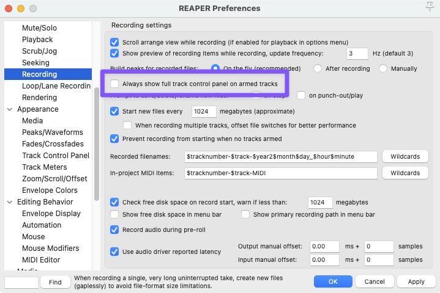
Smart Duplicate
Select Track by Track Number
A custom script that prompts the user for a track number and then selected that track. I’ve assigned it to the keyboard shortcut Control+Tab
DRD_Select Track by Index Number.lua
Playback Seeking Preferences
I like to be able to click around during playback and change the loop/time selection without having Reaper jump to where I just clicked - essentially separating the Edit Cursor and time selection from the Playback position.
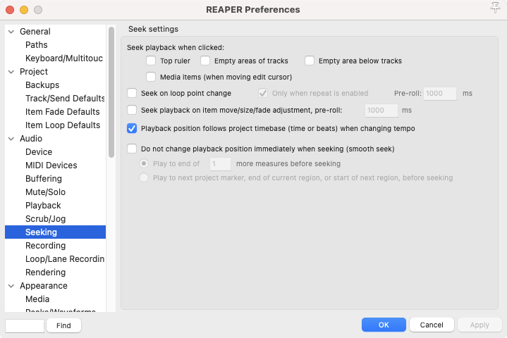
Reaper STEM Manager
I haven’t implemented this one yet, but looks really useful!
SlipView - Full waveform previews in the timeline
Reaper: SlipView - Full waveform previews in the timeline
Time-Based Effects Calculator
Useless Time-based Effects Calculator – BPM-Based Timing Tool for REAPER